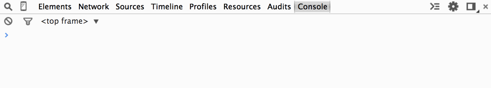
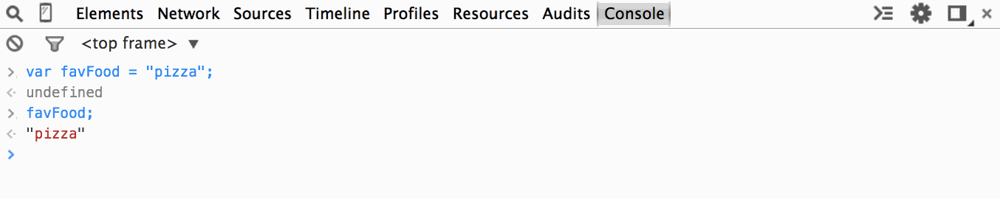
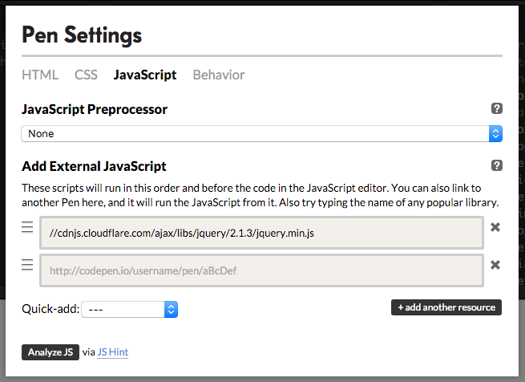
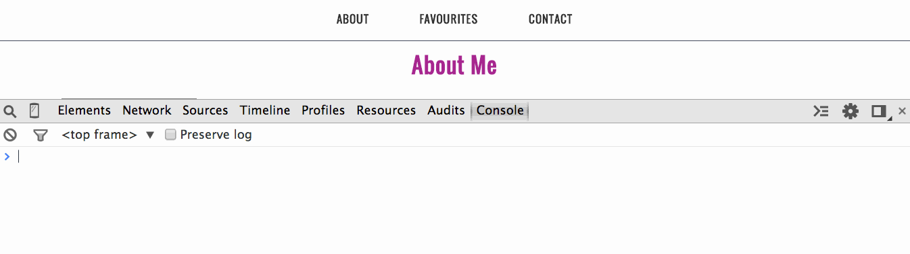
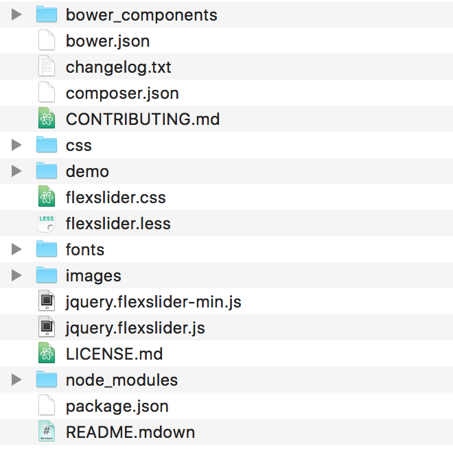
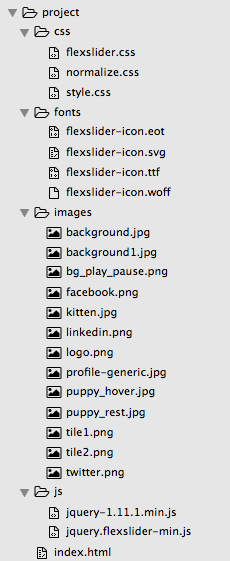

jQuery
for Beginners
## Today's project

Follow this [link](project/final/index.html) to see the project in action!
## Getting Started
You will need:
1. **[Sublime Text](http://www.sublimetext.com)** - a text editor with colour highlighting and other helpful features. If you are unable to install Sublime Text, try installing: [Notepad++](http://notepad-plus-plus.org/) (Windows), [Atom](https://atom.io/) (Mac) or [Text Wrangler](http://www.barebones.com/products/textwrangler/) (Mac).
1. **[Google Chrome](https://www.google.com/intl/en-CA/chrome/browser/)** - Choose a modern web browser that supports current web standards and has good development tools. To set Chrome as your default browser, follow [these instructions](https://support.google.com/chrome/answer/95417?hl=en). Visit [browsehappy.com](http://browsehappy.com) for more info about modern browsers.
1. A sense of adventure!!!
**Bonus:** One of the great things about Sublime Text it that you can add extra functionality to it with *plugins*. [Go here](https://github.com/infn8/LLC-Intro-To-jQuery/blob/master/sublime-text-setup.md) to learn more about adding some cool functionality to your Sublime Text editor.
HTML, CSS & JavaScript
JavaScript was meant to manipulate web pages written in HTML and also works with CSS.
HTML (Hypertext Markup Language) is used to define the content.
CSS (Cascading Style Sheets) is used to create the presentation and look of a site.
I'm a paragraph with style.
JavaScript is a programming language used to define the behavior and add functionality to a website.
I'm a paragraph that can be clicked. Try it!
## HTML overview
HTML (HyperText Markup Language) is the **content** of your document/web page. Using `<tags>` we can create **elements** that represent items on our page. Below are just a few examples.
####Paragraphs
```xml
<p>Paragraph.</p>
<p>Another paragraph.</p>
```
####Lists
```xml
<ul>
<li>List Item</li>
<li>List Item</li>
<li>List Item</li>
</ul>
```
####Images
```xml
<img src="http://www.fillmurray.com/300/300" alt="Placeholder Image">
```
HTML tags & the browser
By placing these items together on a page we get something that looks like this in the browser:
Paragraph.
Another paragraph.
- List Item
- List Item
- List Item

##CSS overview
CSS (Cascading Style Sheets) defines the *style* and controls the look and feel of the HTML document. **Selectors** are used to determine which **HTML elements** to apply the style to and then rules (aka **declarations**) are specified in the form of `property: value` pairs, wrapped in curly braces `{}`.
```css
selector {
property: value;
}
```
**Properties** determine the *type* of style to be applied to the element (e.g. color). **Values** are specific to the property. Declarations must end with a semi-colon (`;`) to indicate that the instruction is complete.

CSS selectors: HTML tag, class & id
Let's look at the different ways to select an element. To select an HTML tag, just use the HTML tag name without the angled brackets.
<div>Select all div elements.</div>
For classes, the attribute must be added to the HTML and denoted by a leading period in the CSS.
<div class="special">Select ANY element with this class.</div>
Select ANY element with this class.
For an id, the attribute is also added to the HTML but is denoted by a leading number symbol. Note that ids can only be used once per page.
<div id="special">Select ANY element with this id.</div>
Select ANY element with this id.
Change the values with the students to give them a small hands-on exercise.
## What Is JavaScript?
JavaScript controls the **behavior** of your document. It allows you to do things such as animate items, hide or show items, react to user input and even process data. Here's what JavaScript looks like:
var myVariable = "Hello World";
function sayHello(){
alert(myVariable);
}
sayHello();
The structure and syntax of JavaScript is more complex than either HTML or CSS because neither HTML nor CSS are full fledged programming languages. They do not have **variables**, **functions**, **objects** or **control structures** such as **if** statements or **loops**, which are the basic building blocks of programming.
JavaScript has *all* of these.
What is jQuery?
jQuery is JavaScript.
jQuery is a cross-browser JavaScript library designed to simplify your program. Though it has its own syntax, it is still JavaScript at its core so it's important to have an understanding of traditional JavaScript principles.
Before we get into the nitty-gritty details of these JavaScript principles, let’s take a quick look at a tool called the console.
It might be a good idea to explain that unlike HTML & CSS, it takes a lot more to see results in JS. Though it might be hard to see the bigger picture at first, it's important to learn how all the different pieces work and learn the syntax. A lot of the upcoming exercises will be focused on getting used to writing programs in general and getting used to the syntax.
## The Console
The console is an interactive tool, built into the browser. We can use this tool to enter commands and interact directly with a web page, log diagnostic information and check for errors. We'll be using it today to practice writing some JavaScript code. The console in Chrome looks like this:

**Note the ```>``` symbol.** It is used by the console to represent a space for you to enter your input but you don't have to actually type it.
Accessing the Console
In Chrome, there are a couple ways to open the Console tab.
Use the keyboard shortcut:
COMMAND + OPTION + J (MAC)
CONTROL + SHIFT + J (WINDOWS/LINUX).
OR
Select: View > Developer > JavaScript Console.
You can open the console when viewing any HTML page but let’s use this blank HTML page, console.html so we can have a blank slate to practice with throughout the day.
Open console.html now and take a moment to practice opening and closing the console until you’re comfortable with it.
Re-iterate to the class to keep console.html open in a tab to refer back to for the console exercises. A blank document was created rather than opening the console in the slide deck so any errors showing won't confuse the learners and take away from the lesson explaining things not needed for the task at hand.
## Mini-exercise
Let's experiment with typing some input into the console. Return to **console.html** and open the console. After the `>` symbol, type your favorite number and press the enter/return key.
You will see something like this:

The ```>``` symbol is used by the console to represent a space for your input.
The ```<``` symbol is used by the console to represent the **returned value** of your input.
You can also input text BUT when using text, make sure you put it in quotes (more on this soon).

The command you input into the console gets *evaluated* and a value is returned back to you.
JavaScript Overview
Variables & Functions
Let the learners know that these concepts are the building blocks of the language and it's important to understand the syntax, how each concept works and together all of this will be needed to create interactions with JS/jQuery. It may be hard to see the bigger picture at first, we just have to go through the fundamental concepts to understand how to build a program to create different types of interactions.
## What *is* a variable?
A variable is a named memory location which contains some known or unknown quantity or information.
**In *English*, please.**
Variables are like containers or a box. They are used to **store** values that can be used at any time, whenever you need them. At its most basic, we make a variable when we give a **name** to a **value**.
When creating or *declaring* a variable, you must use the keyword `var` but you can name the variable anything you want. End the command with a semi-colon (`;`) so JavaScript knows you're done.
Let's look at the below example.
```javascript
var myVariable = "Hello World";
/* | | |
keyword | value given to variable
|
variable name created by you
*/
```
We are taking the value ```Hello World``` and giving it the name ```myVariable```.
This is referred to as *assigning* a value to the *variable*. Evaluate everything to the right of the equals sign, then assign this value to the variable on the left side.
##Naming a Variable
Variables can't contain spaces so a convention called camel case is generally used. Every new word is capitalized and the result looks kind of `likeCamelHumps`.
JavaScript is case sensitive (uppercase and lowercase letters are treated differently) so variable names are also case sensitive.
Use a descriptive name to make it easier to see, what kind of value that variable is going to hold.
`var firstName;` ← Clear that first name will go here.
`var fn;` ← Not as obvious as firstName.
`var x; ` ← Not clear at all.
## Variable Types: Strings
When you store any amount of text, like words or sentences, the variable type is a **string** value and must be contained in quotes.
```javascript
var myVariable = "Hello World";
```
You can *add* strings together to make longer strings. This is called `concatenation`.
```javascript
var first = "Hello";
var second = "World";
var wholePhrase = first + " " + second;
```
The JavaScript above **concatenates** the three items together:
1. the variable `first` with the value `"Hello"`
* the **anonymous** string value `" "` to add a space.
* the variable `second` with the value `"World"`
So the results of the variable `wholePhrase` is:
var wholePhrase = first + " " + second;
= "Hello" + " " + "World"
= "Hello World"
Class exercise
Create a variable called favFood and give it a value. What is the syntax for creating a variable and assigning a string value?
var favFood = "pizza";
Try adding the above code into the console on console.html. What value gets returned? undefined
That is perfectly fine. Remember, variables are used to store values until you're ready to use them. favFood is still holding on to the value so it returns nothing (undefined). But now, JavaScript now knows that you've assigned a value to a variable. To actually use the variable, just type favFood into the console. It will now return the value that it was storing.

Class exercise (continued)
Let’s try concatenating some strings with the favFood variable. In the console, try typing this command:
"My favorite food is " + favFood;

Note that when we execute a command without var, the assigned value of the variable gets returned instead of undefined. Reminder, var is used to a declare and create a variable and will hold the value, until used.
Challenge! How would you add a period to the end of the sentence?
Give some real world of examples of why or how variables can be used. Ex. form values can be used to create shipping labels.
## Variable Types: Strings and Quotes
JavaScript understands strings as values that are wrapped in either 'single quotes' or "double quotes." You can use either style but you must start and end the string with the same mark.
```javascript
var works = "This string value's the bomb!!!";
var fails = 'This string value's the bomb!!!';
```
```javascript
/* ^ ^
|_________________|
|
Javascript thinks the string ends with the second apostrophe.
It is then expecting the command to end with a semicolon (;)
and will return an error.
*/
```
```
var alsoWorks = "Then I said: 'That string value was the bomb!!!' ";
var alsoFails = "Then I said: "That string value was the bomb!!!" ";
```
Try copying each line and putting it into your console to check for errors.
## Variable Types: Strings and Quotes
To get around the issue shown in the previous slide, you can put a backslash (`\`) in front of the quote to *escape* the quote so it does not end the string.
```javascript
var totallyWorks = "Then I said, \"No way you can do that!!!\" ";
/* ^ ^
| |
|___________________________________________|
|
JavaScript now sees a string starting and ending with the same symbol.
The variable 'totallyWorks' is assigned a string value of:
Then I said, "No way you can do that!!!"
*/
```
Another option is to use single quotes to enclose the entire string.
```javascript
var alsoWorks = 'Then I said, "Yes you can!!!" ';
```
## Variable Types: Numbers
Variable **values** can be one of several different **types**. The most basic is a **number**.
var meaningOfLife = 42; // Whole numbers are called 'integers'
JavaScript can also do math. Use `+` for addition, `-` for subtraction, `*` for multiplication and `/` for division.
```javascript
var endingValue = 5 * 2;
// This will return the value of 10.
```
The calculations work the same whether the values are numbers, or values stored in a variable:
```javascript
var startingValue = 5;
var multiplier = 2;
var endingValue = startingValue * multiplier;
// 'endingValue' is still 10.
```
## Class Exercise
Let's practice using numbers & arithmetic operators.
`+` for addition, `-` for subtraction, `*` for multiplication and `/` for division.

Now, try using these operators with variables. Let's create a program for finding a person's age. Create two variables, one for `currentYear` and one for `birthYear` and subtract the values.

## Exercise (5-10 mins)
Create a program using the concepts covered so far: variables & arithmetic operators.
How many seconds are there per day?
* Create variables for `secondsPerMinute`, `minutesPerHour` and `hoursPerDay`.
* Use those values to calculate `secondsPerDay`.
Feel free to use your own variable names or abbreviations. Just make sure to adhere to best practices for naming variables.
**Extra Challenge!**
Use concatenation to output "There are x seconds per day."
(Advance to the next slide to see the solution.)
## Exercise Solution

```javascript
var secondsPerMinute = 60;
var minutesPerHour = 60;
var hoursPerDay = 24;
var secondsPerDay = secondsPerMinute * minutesPerHour * hoursPerDay;
// This command will output the value of secondsPerDay
secondsPerDay;
// Concatenating strings with the secondsPerDay variable.
var sentence = "There are " + secondsPerDay + " seconds per day.";
// This command will output the value of sentence.
sentence;
```
## Variable Types: Booleans
Variables that only contain a `true` or `false` value are called **booleans**
var isTenGreaterThanZero = true;
var isTwoLessThanOne = false;
## Variable Types: Arrays
Variables can also hold a *list* of values (the values themselves being **types** like strings, numbers or booleans) in what is called an **array**. Note the syntax; the entire array value needs to be enclosed in square brackets `[ ]`, with each value separated by a comma *except* the last value.
```javascript
// Declaring the array and assigning values.
var myFavoriteThings = [ "Raindrops On Roses", "Whiskers On Kittens" ];
```
You can also write each value on its own line for readability. JavaScript will ignore the line break.
```javascript
// Declaring the array and assigning values.
var myFavoriteThings = [
"Raindrops On Roses",
"Whiskers On Kittens"
];
```
##Array values
To access the value of a variable, use the variable name. For **arrays**, the values are accessed by their array name and **numerical index**, also contained in square brackets, which always **starts at ```0```**. To get the value of the first item in an array, the syntax will look like this:
```javascript
myFavoriteThings[0];
```

Think of arrays as egg cartons. All the eggs are in one carton but each egg has its own slot.
An alternative way to declare and assign values to an array is to use the square bracket notation with the index number. This will give the same results as the example above.
```javascript
// Declaring an empty array.
var myFavoriteThings = [];
// Assigning values to the array.
myFavoriteThings[0] = "Raindrops On Roses";
myFavoriteThings[1] = "Whiskers On Kittens";
```
## Variable Types: Objects
Another type of variable that can hold multiple values and types is an **object**. To *declare* an object, use the curly brackets `{}`. The values are written in property name and value pairs like this:
```javascript
var myObject = {
propertyName: propertyValue,
anotherPropertyName: anotherPropertyValue
}
```
You can even use an array as a property value.
```javascript
var vonTrappFamily = {
father : "Captain Georg von Trapp",
stepmother : "Maria von Trapp",
children : [
"Liesl von Trapp",
"Friedrich von Trapp",
"Louisa von Trapp",
"Brigitta von Trapp",
"Marta von Trapp",
"Gretl von Trapp"
]
};
```
In the example above the object has 3 **properties**: ```father, stepmother & children```.
Notice how we use the curly braces ```{ }``` to denote an object and the square braces ```[ ]``` for an array.
## Variable Types: Objects (continued)
```javascript
var vonTrappFamily = {
father : "Captain Georg von Trapp", //The value of the property 'father' is a string of text.
stepmother : "Maria von Trapp", //The value of the property 'stepmother' is a string of text.
children : [ //The value of the property 'children' is an array of items.
"Liesl von Trapp", //Each array item is a string of text.
"Friedrich von Trapp",
"Louisa von Trapp",
"Brigitta von Trapp",
"Marta von Trapp",
"Gretl von Trapp"
]
};
```
The pattern of an object is like this:
```javascript
var variableName = { propertyName : propertyValue, anotherPropertyName : another Value };
/* | | | | | | | |
| | | | | |_________________| curly brace
| | | | | | closes object
| | | | | This can repeat for
| | | | | as many properties as you like.
| | | | └ A comma (,) separates properties
| | | └ The property value follows the colon.
| | └ A colon (:) is used to separate name from value
| └ The property name must start with a letter and contain no spaces
└ The curly brace starts the object.
*/
```
## Variable Types: Accessing an Object
Object values are accessed or set via a syntax called **dot notation**. To access the value for the `father` property, it would look like this:
```javascript
vonTrappFamily.father = "Captain Georg von Trapp";
```
To get the value of one of the children, by accessing an array value *inside* of the object property, it would look like this:
```javascript
var notAllowedChampagne = vonTrappFamily.children[0];
```
This would set the value of the variable ```notAllowedChampagne``` to the string value of the first child in the array, ```Liesl von Trapp```. (Remember, array indexes always start at 0!)
**The variables that live inside objects are called ```properties```.** They are still variables, but when they are contained within an object, they are then referred to as **properties**.
##Class exercise: Objects
Using the object below, let's add this entire code block into our console and practice accessing various property values.
```javascript
var vonTrappFamily = {
father : "Captain Georg von Trapp",
stepmother : "Maria von Trapp",
children : [
"Liesl von Trapp",
"Friedrich von Trapp",
"Louisa von Trapp",
"Brigitta von Trapp",
"Marta von Trapp",
"Gretl von Trapp"
]
};
```
## Variable Types
As you've just seen, there are *many* different variable types in JavaScript and many rules about how to write them.
It will take practice getting used to all different rules but it is important to understand that variables are used to hold values and the values themselves have different types.
## Ok, now what?
We have been practicing writing lines of JavaScript. These lines of JavaScript can now be used to write software which are just a series of commands for a computer to follow. Now... we write code.
### What code?
That depends. What do you want your **program** to do? Let's look at [this menu example](framework/example-menu.html). Using JavaScript, we write out step by step instructions on how to do the following things:
* Pay attention to the links in the main menu of a page.
* Whenever someone hovers over one of those menu items, move a line to highlight the hovered item.
* When the mouse leaves, move the line back to where it was.
This example illustrates a short series of commands. When these series of commands are repetitive, rather than writing the same line(s) of code many times throughout our program, we can create a `function`.
## Functions
If a `variable` is a name for a value, then a `function` is a name for a **set** of commands or instructions. When we invoke a variable, it just returns the value. When we invoke a function, it executes all the commands contained within, making it easier to make the code "do things."
Let's look at two functions, `alert()` and `prompt()`. These come built into JavaScript, for free!
Go back to the console and type both functions in, one at a time, and see what happens. Note the syntax for functions, the parentheses `()`, must be included.
##Functions and Arguments
We've seen now that the `alert()` and `prompt()` functions create a pop-up in the browser but the pop-ups are blank. We can also *pass* an **argument** *into* these functions by adding a value within the parentheses `()`. Try this in the console:
```javascript
alert("Hello!");
```
```javascript
prompt("What day is it today?");
```
Whatever value you put within the parentheses will get passed into the function.

## Make your own functions!
You can create your own functions that can contain any number of instructions that you need, including other functions. Use the `function` keyword to declare a new function.
Let's look at this example:
```javascript
function sayAnything(){
alert("Hello World");
}
```
The above example creates a new **function** called `sayHello` but similar to variables, nothing will happen until the function is **called**.
We've already had practice calling a function. Remember `alert();` and `prompt();`? Simply **call** the function by using the function name plus parentheses `()`. Let's add the above function declaration into the console and then execute it by calling it.

##Functions, Arguments & Parameters
Functions can be used to make your life a LOT easier once you get used to how to write them. A function should be used when you have something you need to do time and again in your project.
Just like with the built-in functions, you can also pass *arguments* into your own functions too.
Let's take another look at the function from the previous example.
```javascript
function sayAnything(){
alert("Hello World");
}
```
Notice that the ```sayAnything()``` function has empty parentheses `()` while the ```alert()``` function has the **string** value "Hello World" in the parentheses `()`.
We can create a **parameter** to pass an argument into the function.
## Creating Functions with Parameters
**Parameters** are data that are passed into a function as variables.
Instead of saying "Hello World" every time you call a function, you might want to say something different each time it is called. Let's see what that might look like:
```javascript
// Declaring the function with a parameter of 'message'
function sayAnything(message){
alert(message);
}
// Calling the function
sayAnything("Welcome to the LLC jQuery workshop!");
```
Now, when we call the function, we can pass an argument in the parentheses (`"Welcome to the LLC jQuery workshop!"`). That argument now becomes the value of `message` which will now populate the `message` in `alert(message)`.
Let's try it out in the console. First add the function, then call it. You can call the function as many times as you want with different arguments.

##Multiple Parameters
JavaScript allows for multiple parameters. When you call the function, add the values in the same order as the parameters declared in the function.
```javascript
function myCustomFunction(parameter1, parameter2, parameterN) {
/* | | | |
| | | └ You can have as many parameters as you need.
| | └ The second parameter of the function.
| └ The first parameter of the function.
└ The name of your function.
*/
}
// Call the function with arguments in the same order
myCustomFunction(parameter1, parameter2, parameterN);
```
##Objects, Functions and Methods
What's the difference between these two? The second one kind of looks like a function right?
``` javascript
alert();
console.log();
```
`alert()` is a **function**, it works on its own.
`log()` is a **method** because it's attached to an **object**, `console`. It will log a message (the argument passed into `log()`) and will only show in the console tool.
This is much easier for testing and debugging than using `alert()`. No more pesky pop-ups!
##Objects & Methods
Pretty much everything in JavaScript is an object. Here's another example:
```javascript
// array object
var fruits = ["apples", "oranges", "pears"];
// accessing the 'length' property of the array object to find out how many there are.
var typesOfFruits = fruits.length;
// Output into the console the number of items and concatenated into a sentence.
console.log("There are " + typesOfFruits + " types of fruit.");
```
Try it out in the console.
Functions & jQuery
A function is one of the most powerful tools in JavaScript and one of the most powerful functions you will ever use is this one:
jQuery();
Remember, jQuery is a JavaScript library. It is a library of functions/methods used to simplify your program. You can download it and use in your projects.
Phew!

And that is JavaScript in a nutshell.
Guess what? You already know how to use jQuery.
## Using jQuery
You know how to use jQuery because you know how to select **HTML elements** with **CSS selectors**.
```css
.menu-item { color: blue; }
/* | | |
| | └ The value of the CSS property.
| └ The CSS property.
└ HTML elements with a class of 'menu-item' are selected.
*/
```
That same code in jQuery is done like this:
```javascript
jQuery('.menu-item').css('color', 'blue');
/* ^ ^ ^ ^ ^
| | | | └ The second parameter sets the css value.
| | | |
| | | └ The first parameter sets the css property.
| | |
| | └ The jQuery 'css' method is called and will change
| | the css of the element selected in the previous step.
| |
| └ The argument sent to the jQuery function is a 'string' value
| that takes the form of a css selector.
|
└ The jQuery function. This is super important because this makes everything else work.
*/
```
## Shortcut: The Dollar Sign
```javascript
var $ = jQuery;
```
Anytime you want to write ```jQuery```, just use ```$``` instead. It saves time and is the convention in most cases.
```javascript
jQuery('.myClass');
```
is the same as:
```
$('.myClass');
```
That's what we'll be doing going forward.
## What else can jQuery do?
* Animate items
* Perform interactions with your users
* Create rich user experiences with components like:
* Tabs
* Accordions
* Draggable & droppable items
* Image Rotators
* Serve a random background image each time a page loads.
* Create an 'infinite scroll' effect by loading more items when a user reaches the bottom of the page
* Create complex layouts that are not possible with CSS alone.
* Detect the capabilities of a browser before serving up functionality like CSS Animations.
The library contains many, many built-in functions and methods. View the documentation here: [http://api.jquery.com](http://api.jquery.com).
jQuery Examples:
Here is an example of a single animation and a chained animation (they run one after another).
See the Pen jQuery Animation Example by Ladies Learning Code (@learningcode) on CodePen.
Have a look at the HTML, CSS, & JS tabs as well as the Result tab.
You can rerun the animations, when in the Results tab, by hovering over the example and clicking the "RERUN" button in the bottom right corner.
Get the learners to change a couple values so they can see how things change but just give a high level overview about the concepts. They will be discussed in more detail in the next few slides.
jQuery Examples
Each button below has been given different instructions to follow when clicked.
See the Pen jQuery Event and Method Examples by Ladies Learning Code (@learningcode) on CodePen.
The HTML consists of several <button> elements, to click and add the jQuery action to. The <div class="stage"></div> is being used as the selector. The <div class="player"></div> is the square.
The CSS sets the colour and size of the squares and floats them so they sit side by side.
The jQuery is where all the cool stuff is happening.
jQuery Examples
You can even extend the capabilities of jQuery with plugins like the jQuery UI plugin used below. You can drag and re-order the items using the jQuery UI sortable plugin.
See the Pen jQuery UI Draggable Sortable Example by Ladies Learning Code (@learningcode) on CodePen.
When editing a Codepen, you can select the gear icon in the JS box and it will show you if/what library it's using. In the example above, you can see it's using jQuery & jQuery UI.

#Let's write some jQuery!
##Setting up our work flow
For the rest of the day, you'll be working with the files included in the project folder. Let's take a moment to set up the work flow.
Inside of the folder you downloaded today (**llc-intro-to-jquery-master**), there are many folders and files that contain different content.
llc-intro-to-jquery-master
|-- framework // Contains files needed for slide presentation. Do not edit!
|-- project // Contains files for today's workshop.
|-- css // Only CSS files here.
|-- final // A complete example of today's project for your reference.
|-- images // Images for your project. You can also add your images here.
|-- js // All your js files go here.
|-- index.html // The homepage of your site.
|-- index.html // This is the file you're viewing right now (slides)!
##Setting up our work flow
Let's open the project files in the browser and text editor.
* Open Sublime Text, then go to **File > Open**.
* Navigate to the **project** folder (inside the folder you downloaded with today's slides).
* With the entire folder selected, select **Open**.
* The folder will appear in the side bar. Double click on **index.html** in the sidebar to open it in the editor.
* Right click or two finger tap in Sublime and select Open in Browser. This will open the HTML file in your default browser.
* If Chrome is not your default browser, go to your Window/Finder and navigate to the **project** folder, right-click/two-finger tap on **index.html** and choose **Open With > Chrome**
You should see this in Sublime Text:

Using jQuery
To use jQuery on your HTML page, you'll have to link to the jQuery file. There are two ways to do that.
1. Include the jQuery files with your project files:
- Download the latest version of jQuery and use the latest, compressed version.
- Save it within your projects files. It’s common to create a separate js folder for all JavaScript files for organization (similar to how there are separate images and css folders.)
- Link it to your HTML document using a script tag. The
src should point to the path to where the file is saved in your project’s folder structure.
Your project folder already has the jQuery file included so no need to download anything today.
<script src="js/jquery-1.11.1.min.js"></script>
Important: Unlike CSS, which always has to be included within the <head> tags, JavaScript can be included pretty much anywhere on the page, in the <head> or the <body>. Often, it is included just before the closing </body> to allow the page document to load first.
2. Use a CDN:
CDNs can offer a performance benefit by hosting jQuery on servers spread across the globe.
To use the jQuery CDN (also listed on the download page), reference the file directly from the hosted file, rather than pointed to a file in your directory. Be sure to include the "http://" when viewing the site locally (on your computer).
<script src="http://code.jquery.com/jquery-1.11.0.min.js"></script>
Insert it into your index.html page now.
The examples in jQuery's Learning Center uses the script at the bottom so use it this way to be consistent.
What did we just do?
Let's have a look.
<script src="js/jquery-1.11.1.min.js"></script>
/* | | | └ The closing 'script' tag.
| | └ The location of the JS file.
| └ The 'src' attribute of the 'script' tag expects a file location.
|
└ The 'script' tag. In HTML this tells the document that it's about to get JS commands.
*/
Now that we've linked the jQuery file, we can access all the commands written in that document and be able to access all of the features available.
Great! Now, open index.html in Chrome, or refresh the page if you have it open already and see what jQuery does when you include it in an HTML file.
## Notice any difference in your project?
### No?
That's because the jQuery library on its own doesn't DO anything, it simply gives you the tools to do something. What we do is up to us.
Now that jQuery is on the page we can use the `$();` function which is the real magic of jQuery.
A popular use for jQuery is to target an item on the page and add or change the behavior of that item.
## How to select an item with $();
The ```$();``` function takes a single parameter: A string containing either a CSS selector or HTML element indicating what item(s) on the page to select.
In the example below, this will select all list items, with a class of "even" in an any unordered list.
```javascript
$("ul li.even");
```
This will select the first item with a class of "slide" inside the item with an id of "rotator".
```javascript
$("#rotator .slide:first");
```
The HTML items that match the selector are added into something called the **wrapped set**. This is a special grouping of items that jQuery uses to know what items to alter or add behavior to.
When you run a jQuery **method**, only the items in the **wrapped set** will be altered or affected.
jQuery Methods
The jQuery library comes with many many MANY different methods. We won't be able to discuss all of them today but to see what methods are available, and how to use them, go to api.jquery.com.
We will discuss a few methods here and a few more once we start making our image rotator.
- the
.hide(); method will hide all elements in the wrapped set.
- the
.show(); method will show all elements in the wrapped set.
- the
.css(); method alters the look of the elements in the wrapped set by passing two parameters.
- The CSS property you want to edit
- and the new value of that property
- the
.addClass(); method allows you to add a CSS class to the elements in the wrapped set.
## Timing
The browser downloads all web pages from top to bottom and when it see any JavaScript, it runs it. Right then and there. So if you add this:
```javascript
$("p.highlight").css("background-color", "yellow");
```
before you add this:
```xml
<p class="highlight">This is an important highlighted paragraph</p>
```
The JavaScript code will run BEFORE the browser sees the paragraph tag. jQuery won't be able to match the element and won't change the background colour to yellow!
Enter Document Ready
$( document ).ready() is an event. It’s a point in time when the browser has downloaded enough of the web page to see all the tags and will able to match the elements selected in your jQuery code.
Running that same code in the document ready event looks like this:
$(document).ready(function(){
$("p.highlight").css("background-color", "yellow");
});
Document Ready is a little bit of a complex idea and has a lot of syntax to get used to. Just know that it's required to make jQuery code work. Read more about it here.
##Comments!
Just like HTML and CSS, you can also leave comments in JavaScript/jQuery. You've already seen them throughout this presentation. You may want to write notes to yourself (or others) to organize blocks of code or leave explanations. JavaScript will ignore comments and not execute them.
// This is how you leave a single line comment.
// You can write many single line comments.
// Just make sure to add the double slash
// for every new line.
Here's another way to comment larger blocks of text.
```javascript
/* This is how you leave
multi-line comments for when you
want to write a longer message */
```
Multi-line comments are great for "hiding" large blocks of code so you can try something new without erasing your old code.
Let's DO something already!!!
Go back to Sublime and index.html. Under the jQuery script tag, add another script tag to actually write your own jQuery code.
<script src="js/jquery-1.11.1.min.js"></script>
<script>
</script>
Then add the $( document ).ready() like this:
<script src="js/jquery-1.11.1.min.js"></script>
<script>
$(document).ready(function(){
// Add all jQuery code here.
});
</script>
In the favorites section, there are 4 pictures of an adorable dog.

Let's have some fun with those!
CLASS EXERCISE
The HTML for the favorites section looks like this:
<section id="favourites" class="favourites container">
<h2>My Favourite Things</h2>
<h3>Here are a few things I really love</h3>
<img class="fav-img" src="images/puppy_rest.jpg">
<img class="fav-img" src="images/puppy_rest.jpg">
<img class="fav-img" src="images/puppy_rest.jpg">
<img class="fav-img" src="images/puppy_rest.jpg">
</section>
How would we select those images with jQuery?
## Class Exercise
Let's change the size of the image using the `.width()` jQuery method. You can pass a size argument into the parentheses. Update your `.fav-img` object by using **dot notation** to apply the `.width()` method.
```javascript
$(document).ready(function(){
$(".fav-img").width(100);
});
```
Save the file in Sublime, go to Chrome and refresh the page. If you've done it right it should look like this:

## Class Exercise
What about BIGGER? Pass in a new argument and choose a larger number.
```javascript
$(document).ready(function(){
$(".fav-img").width(400);
});
```
Your page should look something like this:

##Click Events
Now you've seen that you can set the width of an element with jQuery but we could use CSS to do that.
Let's try something only JavaScript could help us with, the **click event**.
Like the document ready **event**, a click event is a moment in time when we want to trigger some code to run. But instead of the browser running the event right away, it only runs when an item is actually clicked by the user.
Adding a function to a **user triggered event** is called an **event listener**. The code just sits around waiting and listening for the event to happen. When someone finally clicks the item, it triggers the function to run.
We'll be going through an example together but you can also view the documentation here: [http://api.jquery.com/click/](http://api.jquery.com/click/)
Click Events
To add an event listener, select the target item just like anything else with jQuery.
$(".fav-img");
Then add the .click() method.
$(".fav-img").click();
Then pass a single parameter to the click() method. That parameter is itself a function. Add function(){} into the parentheses.
$(".fav-img").click(function(){});
Inside of that function, in between the curly braces {}, this is where we'll add the instructions for what to do when the image is clicked.
$(".fav-img").click(function(){
// The changes that occur when object is clicked.
});
##Testing with `console.log();`
Let's test the click event and make sure we've selected the correct object. Remember `console.log()`? This method if very handy for testing and debugging.
Testing the click even will let you know this step is working before you move onto the next step.
```javascript
$(".fav-img").click(function(){
console.log("It works!");
});
```
Refresh your page, open the console on your page and click an image. You should see the message you passed into the `console.log()` method like this:

##Click & Hide
Now that we know the click event works, you can delete the `console.log` test or comment it out. Next, let's make the click event hide the picture. Use `$(this)` as the selector (more on this soon).
Then add the `.hide()` method.
```javascript
$(".fav-img").click(function(){
//console.log("It works!");
$(this).hide();
});
```
The code above will take the clicked image and *dynamically* add inline CSS to the HTML element. It will add `style="display:none;"` to the element to hide it, though the item is still in the HTML.
Let's add this to our project and **inspect the element** to see how jQuery adds these changes. You should see something like the below screen shot in your console.

##Click & Hide: Adding parameters
The `hide()` **method** also accepts a **parameter** for how long it should take for this effect to to occur. Add a number, in milliseconds, in the parentheses.
```javascript
$(".fav-img").click(function(){
$(this).hide(1000);
});
```
This will make the act of hiding the image take 1000 milliseconds, or 1 second.
In jQuery, any time you can provide a duration to an animation, you can either use a number in milliseconds, or a string value of either "fast" or "slow" which mean 200 and 600 milliseconds respectively. If you do not supply a value, jQuery will use the default value of 400 milliseconds.
Add it to your project to see it in action. Try experimenting with different numbers or use the keywords.
##Click & Chain events
What if we just want to hide it for a bit, then show it again? We can by **chaining** our methods.
```javascript
$(".fav-img").click(function(){
$(this).hide(1000).show('fast');
});
```
jQuery methods are chained together with a dot (.) in between them. That means that the below example is perfectly valid and will work just fine. Though this example is kinda silly, it's fun to just experiment sometimes!
```javascript
$(".fav-img").click(function(){
$(this).hide(1000).show('fast').fadeOut('slow').fadeIn(5000).slideUp(800).slideDown(10000);
});
```
Let's add it to our project and see what happens.
## What the heck is ```$(this)```?!?!
Why have we been using `$(this)` as a selector for the previous exercises? What is it and what does it do?
### Good question!
jQuery gives us a special variable called ```this``` as a helper. Though we want to select the image, we want to select **only the specific image** that is being clicked at that moment. The below example would make all the matched images hide on click.
```javascript
$(".fav-img").click(function(){
$(".fav-img").hide(1000);
});
```
`$(".fav-img").click()` will watch for *any* image being clicked.
`$(".fav-img").hide(1000);` will add the hide effect to **all** the matched elements.
The below code, will ensure that only the clicked item will have the hide action applied to it.
```javascript
$(".fav-img").click(function(){
$(this).hide(1000);
});
```
`$(".fav-img").click()` will watch for *any* image being clicked.
`$(this).hide(1000);` will add the hide effect to only the matched element that was clicked, so only the clicked image will be hidden.
##Exercise: Active Menu
Let's use the jQuery `click()`, `addClass()` and `removeClass()` methods to create an `.active` class to style the menu item differently when clicked. Here are the instructions we'll create with jQuery:
1. Select the elements to be clicked.
1. Add a class of "active" to invoke a new style.
1. Add the "active" class style to the CSS file.
1. When the user clicks on another menu item, add the "active" class to the new item and remove the active class from non-active items.
Let's get started.
Exercise: Active Menu - Click Event
Select the elements to be clicked. Here’s what the menu markup looks like:
<ul class="menu">
<li><a href="#about">About</a></li>
<li><a href="#favourites">Favourites</a></li>
<li><a href="#contact">Contact</a></li>
</ul>
Which selector should we use?
$(".menu a")
Then apply the .click() method.
$(".menu a").click();
Then pass a single parameter to the click() method. Remember, that parameter is itself a function. Add function(){} into the parentheses.
$(".menu a").click(function(){});
Test the click action. Do we have the right element? Check if you see the message in your console.
$(".menu a").click(function(){
console.log("It works!");
});
Exercise: Active Menu - addClass() method
Great! It works! Now, add the addClass method.
$(".menu a").click(function(){
//console.log("It works!");
$(this).addClass("active");
});
Wait? Nothing happened?
That’s because we haven’t added the style in the CSS file yet. You can still check if it’s been added to the HTML. If your console is still open, just click on the “Elements” tab.

Now go to style.css to create a new CSS style for the active state. This will change the color (but you can apply whatever style you like). Since the color has been added to .menu a, create a selector using the new active class
.menu a.active {
color: #A8258D;
}
Now test your page again.
##Exercise: Active Menu - `removeClass()` method
Almost there. We were able to add the class to the clicked item but now we need to remove the class from the non-active items. Remember, JavaScript/jQuery executes commands from top to bottom. One way to fix this issue is to remove the class **first**, *then* add the class to the clicked item.
In this case, we won't use the `$(this)` selector since we are looking for any element with the `active` class to remove it. That means `.active` will be our selector.
```javascript
$(".menu a").click(function(){
//console.log("It works!");
$(".active").removeClass("active");
$(this).addClass("active");
});
```
Now try it!
**Note**: if the class of `active` is used anywhere else on the page, it will be affected as well. Another option is to use a selector more specific to the menu such as `$(".menu a.active")`.
##Exercise: Personalize Your Page (15-20mins)
Now that you've had a chance to get some JavaScript & jQuery practice, take some time to personalize your page. Here are some suggestions to get you started:
1. Update the banner headings.
2. Add your profile image.
3. Update your favorite things images.
**Bonus**
1. Prepare for the next exercise. We will be creating an image rotator. Find four images and just add them to your images folder for now. You don't need to add it to your HTML page just yet.
2. Update the banner background image.
Don't have any images handy? Here are some free resources:
Image Placeholder sites:
* http://placehold.it
* http://placesheen.com/
* http://placebear.com
* http://fillmurray.com/
* http://placekitten.com/
* [many more](http://www.hanselman.com/blog/TheInternetsBestPlaceholderImageSitesForWebDevelopment.aspx)!
Free image download sites:
* http://superfamous.com/
* http://www.gratisography.com/
* http://littlevisuals.co/
* http://nos.twnsnd.co/
* http://unsplash.com/
## jQuery Plugins
jQuery is an extremely capable library on its own. It comes with hundreds of **methods**, many other helper **properties** and the ability to select items for the wrapped set based on **CSS Syntax**.
### But jQuery doesn't & can't do everything.
There would be no way to write a library with methods to handle everything any user would ever want to do. Even if that was possible, it would make the library so large that it would take browsers a very long time to download it and the initial page loading speed of any site that used it would be *VERY SLOW*.
### Enter Plugins
A jQuery plugin is some code that *someone else* has written, that you can use, to achieve certain goals that the jQuery library itself is not designed to handle.
## jQuery Plugins
Some examples of jQuery plugins are
* [Scroll Magic](http://janpaepke.github.io/ScrollMagic/)
* A plugin to make it easy to add effects based on the user's scroll position on the page
* [ToolTipster](http://iamceege.github.io/tooltipster/#demos)
* Custom pretty Tool Tips
* [jQuery UI](http://jqueryui.com/themeroller/)
* A collection of UI widgets designed to make adding complex user interactions easier and very themeable
* This plugin is developed by the jQuery team itself
* **UI = User Interface**
* [FlexSlider](http://flexslider.woothemes.com/)
* A responsive photo slider
We are going to use the FlexSlider plugin today to add a slider of images to our project.
## So, What IS an image rotator?
At its most basic, a rotator is a list of images that uses javascript to show one image on its own, then another, then another... SO if we used HTML like this:
```xml
<div id="rotator">
<ul class="slides">
<li><img src="img/rotator/image1.jpg" alt="First Slide"></li>
<li><img src="img/rotator/image2.jpg" alt="Second Slide"></li>
<li><img src="img/rotator/image3.jpg" alt="Third Slide"></li>
</ul>
</div>
```
The javascript would show the first and hide the rest. Then, after a couple of seconds, show the second and hide the rest. Then keep going until all of the slides have been shown. Then start again at the beginning.
Enter Flexslider
Flexslider is a capable, well maintained and responsive jQuery rotator. Best of all it’s free and easy to use.
Head on over to http://www.woothemes.com/flexslider/ to download the files.
Click the big green download button to download the zip file. Included in the download are many files that we'll need to make the plugin work and there are other files that are just for demo purposes. You will see something like this:

These are the files you will need to copy into your project folder, into the appropriate directory.
- entire fonts folder into the project folder
- flexslider.css into the css folder
- images > bg_play_pause.png into your project > images folder
- jquery.flexslider-min.js into your project > js folder
Your project folder should now look like this:

Your images files may vary but just ensure that bg_play_pause.png is included.
As you start this slide, tell the mentors to help to make sure all the learners are complete this step before moving on. Explain that people may vary on how they create their folder structures but that it's import to understand how to link to the proper directory folders.
Add Flexslider to Your project: Step 1
Now that the plugin files are saved within your directory, attach these files to your HTML page.
Go to back to your index.html file and add the Flexslider file (jquery.flexslider-min.js) after the jQuery library file (jquery-1.11.1.min.js).
<script src="js/jquery-1.11.1.min.js"></script>
<script src="js/jquery.flexslider-min.js"></script>
<script>
$(document).ready(function(){
// Add all jQuery code here.
});
</script>
Flexslider also comes with its own CSS file, so be sure to put that in the <head> section before style.css.
<head>
<title>Page Title</title>
<link href='http://fonts.googleapis.com/css?family=Oswald' rel='stylesheet' type='text/css'>
<link rel="stylesheet" href="css/normalize.css">
<link rel="stylesheet" href="css/flexslider.css">
<link rel="stylesheet" href="css/style.css">
</head>
Note: This is just one way to organize your folder structure. Some people like to create a plugins folder for example for these types of files. Just make sure that your file paths match when linking to the js, image and css files.
##Add Flexslider to Your project: Step 2
Now, let's write the HTML markup for creating the structure of the slider. In the Flexslider documentation, the markup is provided. It's important to use the same structure and class and/or id names as listed because most times, plugins are created to match that specific chunk of code.
You can of course update the src file for the images to point to your own. If you do not have any images at this time, there are some placeholders in your project folder under **images > rotator**.
```xml
<div class="flexslider">
<ul class="slides">
<li><img src="images/rotator/image1.jpg"></li>
<li><img src="images/rotator/image2.jpg"></li>
<li><img src="images/rotator/image3.jpg"></li>
</ul>
</div>
```
You can put this code anywhere you want it to show on the page. Save the file and check your page. You probably won't see anything right? That's because we still have to activate the plugin with a little jQuery.
**Note!** You will see the example image tag code in the Flexslider documentation with an extra forward slash at the end of the image tag. This is the XHTML syntax (previous version). HTML5 doesn't require it.
```xml
<!-- XHTML -->
<img src="path/to/file.jpg" />
<!-- HTML5 -->
<img src="path/to/file.jpg">
```
##Add Flexslider to Your project: Step 3
**Initialize** the plugin by adding this bit of code into your `$(document).ready()` function:
```javascript
$(document).ready(function(){
// Add all jQuery code here.
$('.flexslider').flexslider();
});
```
Yep, that's it. Let's break that down.
```javascript
$('.flexslider').flexslider();
/* | | | └ Parentheses indicate a function call
| | └ The Flexslider method
| └ The selector will add any items with the class 'flexslider' to the jQuery wrapped set
└ The jQuery function
*/
```
Save and refresh the browser.
##It works! Sort of...
Depending how you want your slider to look, it may be too big or too small for your page. By default, it will be as wide as its containing element.
Also, it looks like the left & right arrow is missing. If yours looks something like the below screen shot, it's okay. We can customize it.

## I Can Haz Responsive?
Flexslider comes out of the box with the ability to be responsive. That's why, by default, it's stretching to 100% width of it's container. Try resizing your browser and watch your images scale as needed.
We can fix this with a little HTML & CSS and still maintain its responsive nature. Let's put a new containing element around the Flexslider HTML like this:
```
<div class="flexslider-wrap"><!-- new container-->
<div class="flexslider">
<ul class="slides">
<li><img src="images/rotator/image1.jpg"></li>
<li><img src="images/rotator/image2.jpg"></li>
<li><img src="images/rotator/image3.jpg"></li>
</ul>
</div>
</div><!-- closing new container -->
```
Then add the css to **styles.css** to change the size of the whole container.
.flexslider-wrap {
width: 50%; /* makes the slider 50% of its container */
margin: 0 auto; /* center aligns the slider */
}
Check your page, much better right?
**Pro Tip:**
Make your images only as wide as they NEED to be. That is, the largest size that you will need in your design. They will automatically scale down as needed, but if you make them larger then they need to be the file size will be larger and your page will download slower.
##One more fix
Now let's fix those missing arrows. Usually, when you see a broken image or something is not working properly, the first thing to check for is "Are all my files where they need to be?"
In **flexslider.css**, the source location for the fonts look like this:
@font-face {
font-family: 'flexslider-icon';
src:url('fonts/flexslider-icon.eot');
src:url('fonts/flexslider-icon.eot?#iefix') format('embedded-opentype'),
url('fonts/flexslider-icon.woff') format('woff'),
url('fonts/flexslider-icon.ttf') format('truetype'),
url('fonts/flexslider-icon.svg#flexslider-icon') format('svg');
font-weight: normal;
font-style: normal;
}
In the previous step, we put our **fonts** folder *outside* of the **css** folder. This CSS source needs to be updated to point to where the font files are.
Update this to:
@font-face {
font-family: 'flexslider-icon';
src:url('../fonts/flexslider-icon.eot');
src:url('../fonts/flexslider-icon.eot?#iefix') format('embedded-opentype'),
url('../fonts/flexslider-icon.woff') format('woff'),
url('../fonts/flexslider-icon.ttf') format('truetype'),
url('../fonts/flexslider-icon.svg#flexslider-icon') format('svg');
font-weight: normal;
font-style: normal;
}
Your starting point is **flexslider.css**. The `../` means "Go up and out of a folder", then go into the **fonts** folder. Go ahead and make that change.
Another option is to just move the font folder inside the css folder. The source in the CSS file just needs to match the directory location.
## Customizations
Though this is a pre-written plugin, many plugin authors will provide ways to add various options for further customizations of the plugin.
A couple of Flexslider's available options are:
* Animation Type: **fade** or **slide**
* Animation Speed: Set the speed of animations, in milliseconds.
There are many more options, you can [see a complete list on this page](http://www.woothemes.com/flexslider/#gist9481310).
Let's look at how to set these two options.
## Using A Configuration Object with Flexslider
Go to this line of code in your document:
```javascript
$('.flexslider').flexslider();
```
And change it to the below example. Does that syntax look familiar? [Remember objects](#slide28)?
```javascript
$('.flexslider').flexslider({ animation : "slide" });
```
Then reload your page. Notice how your flexslider will now animate new slides in from the right to the left instead of disolving between the two images. Now change it to say this:
```javascript
$('.flexslider').flexslider({ animationSpeed : 2000 });
```
Reload that. Do you notice a difference?
If you want to use multiple options, you can just separate them with a comma like this:
```javascript
$('.flexslider').flexslider({
animation : "slide",
animationSpeed : 2000
});
```
##Searching for what you need
Luckily we have wonderful community of developers that create code snippets and share them with the rest of the world. The main goal is to be able to write our own code from scratch, but why not use tried–and–true methods that have already been created by the experts?
One of the many small effects one can add to a site to give it that little extra sumthin' sumthin' is a smooth scroll. There are many plugins that can do some fancy tricks but to add a simple smooth scroll to our one page site, we can use this little snippet created by [Chris Coyier of css-tricks.com](http://css-tricks.com/snippets/jquery/smooth-scrolling/).
Let's look at this snippet, then add it to our project.
```javascript
$('a[href*=#]:not([href=#])').click(function() {
if (location.pathname.replace(/^\//,'') == this.pathname.replace(/^\//,'') && location.hostname == this.hostname) {
var target = $(this.hash);
target = target.length ? target : $('[name=' + this.hash.slice(1) +']');
if (target.length) {
$('html,body').animate({
scrollTop: target.offset().top
}, 1000);
return false;
}
}
});
```
## Next steps & resources
**Exciting!** You now have a responsive image rotator on your project page full of the images that you want to show to people. But why stop there?
Check out the [these bonus lessons](framework/bonus-flexslider.html) for further customization of the Flexslider.
Here's a [link to the slide](index.html#slide79) with other available plugins to try as well.
Here are a couple of online resources to try out:
* http://learn.jquery.com/
* http://try.jquery.com/
Also check out this great book: http://javascriptbook.com/
##Getting your site online
You will need to register a domain name (www.mysite.com) and get hosting. Here are a couple domain & hosting suggestions:
* [hover.com](http://hover.com/ladiescode)
* [dreamhost.com](http://www.dreamhost.com/r.cgi?2085384) - Use coupon code **LLC40** to get $40 off your registration!
To get your files online, you will need upload your files to your newly purchased hosting server. There are a few pieces of information you will need and are usually provided to you by your hosting service provider.
* FTP Address
* Username
* Password
Here's a nice tutorial getting your files online using FileZilla: [FileZilla Client Tutorial](https://wiki.filezilla-project.org/FileZilla_Client_Tutorial_%28en%29)
Feeling adventurous? Try [Hosting Static Sites on Github for Beginners](http://thephuse.com/development/hosting-static-sites-on-github-for-beginners/).